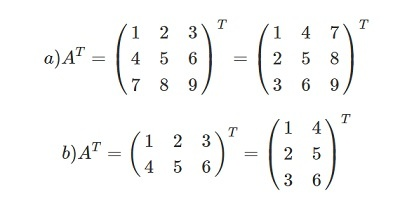
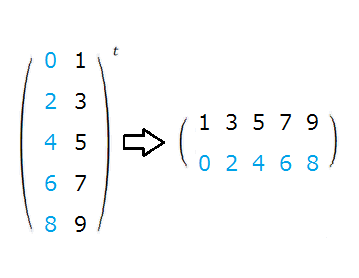

Определение
Транспонирование матрицы – это одна из основных операций в линейной алгебре, которая может иметь важное значение в различных областях науки и техники. Эта операция позволяет изменить расположение элементов матрицы, переставив строки на место столбцов и наоборот.
Принцип работы транспонирования матрицы заключается в замене каждого элемента матрицы его
симметричного элемента по диагонали. То есть элемент, расположенный на пересечении i-й строки и
j-го столбца, заменяется на элемент, находящийся на пересечении j-й строки и i-го столбца.
Значение транспонирования матрицы заключается в решении различных задач, связанных с изменением
изображений, анализом данных, криптографией и другими областями. К примеру, при работе с
изображениями транспонирование матрицы может использоваться для поворота изображения на 90
градусов или для изменения его размеров. В анализе данных транспонирование может быть полезным
при преобразовании столбцов данных в строки или наоборот, что позволяет проводить более
эффективные операции с данными.
Что такое транспонирование матрицы и как оно осуществляется?
Осуществление транспонирования матрицы может быть выполнено вручную или с использованием программного кода. Рассмотрим несколько способов выполнения транспонирования матрицы:
-
Вручную: Для транспонирования матрицы необходимо поменять элементы матрицы местами. Элемент, находящийся на i-й строке и j-м столбце, становится элементом в j-й строке и i-м столбце. Такая операция выполняется для каждого элемента матрицы.
-
С использованием программного кода: Во многих программах для работы с матрицами предусмотрены функции для выполнения транспонирования. Для этого может использоваться цикл, который перебирает элементы матрицы и меняет их местами в новой матрице, которая будет являться результатом транспонирования.
Транспонирование матрицы имеет множество практических применений. Например, в линейной алгебре оно используется в решении систем линейных уравнений, для нахождения обратной матрицы, нахождении собственных значений и векторов матрицы, а также в других математических и научно-технических задачах.
Транспонирование матрицы позволяет изменять ее ориентацию и менять местами информацию, хранящуюся в строках и столбцах. Это важная операция, которая может быть использована при решении различных задач и анализе данных.